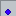
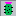
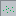

Day 1 - Easy Minesveeper
Day 2 - Normal Mode
Day 3 - Large Mode
Day 4 - Double Mines
Day 5 - Cylinder
Day 6 - Knights Path
Day 7 - Torus
Day 8 - Triple Mines
Day 9 - Möbius Strip
Day 10 - Double Neighbours
Day 11 - Klein Bottle
Day 12 - Not a single mine
Day 13 - Looking up
Day 14 - Flag Left, Dig Right
Day 15 - Sheep
Day 16 - Anti Mines
Day 17 - Keep digging and nobody explodes
Day 18 - Rat
Day 19 - Stripes
Day 20 - Zen Garden
Day 21 - All Numbers
Day 22 - Calm Sheep
Day 23 - 22 in a row
Day 24 - Custom Mode
|
 Hallo
Hallo
Hallo
 Hallo
Hallo
Death in:
0:05.000
Time: 0:00.000
|
Oh hey.
You have started playing the first day.
Now in case you don't know how to play this at all, here is an explanation for the basic game mechanics.
Now if you already know how to play Minesweeper, you will already know what to do here. So you can just completely skip this description as it wont teach you anything new.
So for the rest of this I am just going to assume you have absolutely no idea how any of this works. So lets start at beginning.
Above you see a board of 10 by 10 tiles.
Below these 100 tiles there are a total of 15 mines hidden. Your goal is to figure out which tiles have a mine below them and which are save.
As of now you don't know anything, so to start just left click on any of the tiles. Don't worry you the first tile you dig up and tiles surrounding it are guaranteed to not contain a mine.
Now that you have done that you have uncovered a few tiles, some of them containing numbers. The board might now look something like this:

From here you will now have to use logic, in order to figure out which of the tiles have a mine below them. To do this lets take a look at the numbers. Each number indicates how many mines are around that tile.
As you can see there are 5 tiles around the 4 that have not yet been dug up, but there are 4 of them that have a mine below them. So that doesn't really help us. So lets instead look at the marked 1 it has only one hidden tile around it. We can therefore conclude that there is a mine below that tile. In a similar way the two hidden tiles around the marked two also have to be mines.
Now to keep track of where a mine is hidden. You can right click on these tiles to flag them, this will make it more obvious that there is a mine there, but will also prevent you from accidentally clicking on the mine. You can also right click a flag to remove it again.
Now with these mines there are now some tiles, like the marked ones, where while the number of mines around them is smaller then the number of closed tiles, we do know on which tiles these mines are located. This means that you can dig these other tiles by left clicking them, this may also result in more of these tiles.
And now that you have more of the field uncovered, there should now be more places, where you can find mines and uncover further tiles. This continues until you have eventually dug up all tiles that do not have a mine below them.
Once that happens all remaining tiles will turn green and the timer will stop.
You have now completed the game.
Welcome back!
Now that you are here you should know the basic mechanics of how this game works. As you might have noticed the field today is bigger then the one yesterday. Also this size will also be the average size for this advent calendar as most of the future days will also use a 20 by 20 field.
However now that there is a bigger field that you will have to clear, there might also be some situations where this game isn't as obvious. So here are some examples for how you might still be able to make progress in some situations.

This is a situation that might occur at the edge of the field. Now here we now that there is exactly one mine below the tiles A, B and C. But we also know that there is exactly one mine below the tiles B and C, due to the 1 on the right. This means that the second 1 from he right has its mine either below B or C. This however means that there can't be a mine below A. We have therefore found a tile that is safe to dig, even if we still don't know which tile had a mine below it.

In this situation a similar logic can be used. We know that there is exactly one mine below B or C, but there are two mines below A, B and C. This means that A has to be a mine independent of whether B or C contains a mine.

Another thing that could happen for example, is this pattern next to a wall. In this case A, B and C contain exactly two mines, however these can't be below A and B at the same time as this would contradict the 1 to the left, and they can't be below B and C at the same time, due to the other 1. They therefore have to be located under A and C, while B is guaranteed to be safe.
Ok, now that you should know how to play this game here is a large field for you to try. Don't worry this is the largest field you will see in this advent calendar, almost all of the remaining days will be as big as the field you had yesterday. Also this day does not add any extra features to the game. I swear I will get more creative tomorrow. You won't get a 40 by 40 field tomorrow.
Besides that here are some further tips that might help you complete a game. Yesterday there were some cases described, where seeing the locations of the mines were not as obvious as on the first day. Now you might take this even further and could make an assumption about a tile and then look at what this would lead to. If you end up with a contradiction, you will then know that your initial assumption was wrong. For this you could also take a screen shot and then draw onto that, if things get too complicated.
As you might have noticed in the top right is a counter for the flags you have placed and for the tiles you have dug up already. If you are getting close to the end of the game, this might help you. Since you will know how many mines are still left.
It is also not necessary to set flags, as you will win once you have dug up all safe tiles. However it might be helpful in such a situation.
Now even after that, you might still end up in a situation, where you are forced to make a guess. At this situation it might be useful to look at how likely a certain tile is to be a mine, in order to make the guess that is the least likely to kill you. If you end up with a genuine 50/50 guess, where there is no way around it and you will need to take it at some point anyway. It might be useful to take it right away, because if you get it wrong you will safe the time you would have otherwise spent solving the rest of the field only to then die afterwards.

Imagine you had this situation, you only know that below A, B and C is exactly one mine and you are forced to make a guess.
If you choose to dig up B there is a 1 in 3 chance that you will die. If you don't die however you will now be left with another 50/50 guess between A and C, meaning you will only complete the game with a 33,3% chance. However if you instead dig up A or C, there will also be a 1 in 3 chance that you will die, but if you don't, the number you will then get will tell you whether there is a mine below B, meaning you will then be able to complete the game. So choosing to dig up A or C will lead to you completing the game with a 66,7% chance.
So what does all of this mean?
If something isn't obvious, wait until later.
If there is no way to increase the probability of a guess by waiting, you might just make a guess right away to safe time if you are wrong.
Otherwise choose the option that is the most likely to lead you to completing the game.
So with all of that good luck on today's game and if you return here tomorrow you will get to see some actual new mechanics.
Happy to see you back here.
So today there is the first new feature added to the game. This being double mines.
These are tiles that don't just have one but two mines below them, this could lead to a situation like this.

In this case there is only one hidden tile next to the 2, this means that there has to be a double mine below that tile. To set a double flag just right click on a normal flag again, to remove a flag right click the double flag again. Also the 3 in the example imagine is surrounded by a single and a double mine. Meaning the other two tiles next to it are safe, as the 3 already has 3 mines next to it, even if they are under only two tiles.
Also I now have a unique feature for Minesveeper, that the similar game with the "w" in the name doesn't have.
Yesterday double mine were added.
But there were only a few of them on the field, however today they will be a bit more common.
But more importantly today the left and the right edge of the field are connected. So you could in theory roll it around a cylinder. Now this will mean that numbers at the edge of the board will also count mines on the opposite side. The top and the bottom are still borders and aren't connected.

The last 5 days each number indicated the number of mines on the 8 tiles directly around it. Today this will change.
In order for this to not get too complicated, there are no double mines today and the edges are just normal borders, non of the are connected today.
The numbers today indicate the numbers of mines on the 8 tiles, that are 2 tiles on one axis and one tile on the other axis away.


This is how the numbers around a single mine would look like and what mines would be needed in order to see an 8.
Welcome back!
If you have played all previous days you will by now have completed one forth of this advent calendar.
Oh, and lets just go back to the numbers indicating the direct neighbours for today.
So you might remember how the left and the right edge were connected on the 5th. Now the top and the bottom are also connected in the same way.
This means you could take glue together two opposite edges to get a cylinder. And then you would glue together both ends of the cylinder to get a torus.
Now when you are just playing on this 2D field, if you see a number on an edge it will give you hints about the mines on the other side.
You should also be careful about numbers inn a corner. These will also count 2 tiles opposite on each axis and the opposite corner. Meaning you will need
to look in all the other 3 corners as well and not just at one opposite side of the field.

And double mines...
They are back and just as common as normal mines.
So you remember how double mines were introduced on the 4th?
Because now we are going to take this one step further and will be adding triple mines into the mix. They are just like double mines as they only take up one tile but count as multiple mines for the surrounding numbers. To set a triple flag just right click a double flag again.

In this example the 4 is surrounded by only two tiles and we know that below the top one is only one mine, this means that there is a triple mine below the other one.
And if you want to, you could also find guaranteed triple and also a double mine plus some save tiles within this example just based on the numbers uncovered so far.
By the way the edges are back to normal and none of them are connected for today.
Now you might ask yourself: "This guy is adding triple mines, how uncreative will he get during the later days? How long until I get to see 4 mines below a single tile? And by the end of this Advent Calendar will there be 10 mines below a single tile?"
No, there won't be more then three mines below a tile during this advent calendar, I promise! I wont go further than this.
On the 5th day, the left and the right edge of the field got connected.
However when doing something like this, there are two ways to do this. Back then we made the assumption that the top of the right edge would be connected to the top of the left edge. However before connecting the edges we could also take one end, turn it by 180° and then connect them. This way the top of the right edge would connect to the bottom of the left edge and the top of the left edge would be connected with the bottom of the right edge.
Now if we do this we won't end up with a cylinder around which we have rolled the field, but instead we get a möbius strip. Which also means that we now only have one edge to the field since when we follow the top edge through the left or right side it will then turn in to the bottom edge.
The board could then end up looking like this, as an example:

And today you also get a good mix of single, double and triple mines.
Nice to see you that you are still here!
So after the chaos of yesterday, we will now go back to a regular board, and there will only be regular mines. But there is a slight change to the numbers again. While they still indicate the 8 tiles directly around them, today the direct neighbours are counted twice, while the tiles on a diagonal are just counted as always. So the numbers around a single mine would look like this:

Sounds confusing?
It isn't actually that bad, since when you see a one you will know that there won't be a mine directly next to it and that it has to be on a diagonal.
You know,
two days ago when we created a möbius strip. We only ended up connecting the left and the right edge. However we still have the option left to connect the top and the bottom normally, like when we first made a cylinder. Now the shape you would get after this is kind of weird. And the surface would be forced to pass through itself which could be avoided if we were to imagine this object in four dimensional space.
However if you want some visualisations for this, you can look it up on your own as this shape is also known as a Klein Bottle.
Now to the problem at hand: How do you play on it?
It's not too different as before, when you are at the bottom of the screen it just connects to the top of the screen again, so you just have to look what column a number or mine is in. And when you get close to the left or the right of the screen you treat the edges as you did when you just had a möbius strip.
The board you get could end up looking a bit like this:

Edit:
So this is me just wanting to add a comment to this about 4 hours before this day unlocks.
Apparently there is also a thing called a real projective plane, where both top and bottom, and left and right are connected in opposite directions. When I made this calendar, I tried to imagine how such a connection would work and it didn't seem to make sense around the corners. As far as I understand now, the problem is that the original idea behind this shape is to imagine a disk connected in a way like this and then you deform it into a square. Meaning the corners are also just points on the edge of the disk and if you were to zoom into them they would appear like a flat edge. So on a square the corners are strongly distorted. If I would however treat these with the same algorithm for counting neighbors as I do for all other shapes, then if you were to take the top left corner, both the tile to its left and the one above it, would be the bottom right corner and even worse the tile to its top left would be the top left corner itself.
So if I would want to do a proper real projective plane I would need a distinctly different algorithm.
However none of this should be your problem as today you only play on a Klein Bottle, so you could ignore this entire edit. This was completely unrelated to today's mechanic.
We have added double mines,
we have added triple mines,
do we even need normal mines?
No we do not!
So for today lets get rid of them and only have double and triple mines. Also this isn't nearly as confusing as it might sound as for a lot of "smaller" numbers, like 2, 3, 4, 5 and 7 it will be obvious how many double and triple mines are around it. And the few other cases that you might see shouldn't as complicated as they might have been when there where single mines in the mix.
So just give it a try it's not too bad
And for today the left and right edge are connected, creating a cylinder.
12 days done, 12 left to go.
So for today we are going to have another one of those days where the numbers indicate a different shape of tiles. And these are going to be the 6 tiles above a tile, one to the left and one to the right on the two rows above. Now this does not give you any information about the mines below a tile or directly to it's side, so the top and the bottom of the field will be connected for today, the left and the right are regular edges.
To give a few examples for how this works:

This is just the casual cases where there is only one mine within the 6 tiles and only one tile left, so it would have to be a mine.

And this is a case that isn't too uncommon to come across. The important thing here are two two's above each other, however this would also work if there are two one's or two three's on top of each other. So if you look at the bottom two, the three tiles above it are already uncovered, so the two mines have to be in the upper row. However for the two above this is the lower row that contains two mines, so with that you do not need to know which of the tiles are the two mines, but in this situation you can still conclude that all three tiles on the row above are safe.
So with that, good luck for today.
During the last days you probably have gotten quite used to the controls of the game.
Because of that there are going to be no complicated features today and the only difference to the second day is that today your controls are reversed. Meaning right click will dig up a tile and left click will set or remove a flag.
That's all for today, good luck and just don't use the wrong buttons.
Good thing, to see that you are back here!
So far every time you figured out a tile without a mine below, you could have just clicked on it right away. And the order of safe tiles you have clicked on has made absolutely no difference. That will not be the case today and you might have to do a bit more planning ahead.
Because once you dig up the first tile a sheep will appear there and every time you dig up another time, the sheep will move one tile including moving diagonal in the direction where you have clicked. The problem with this is that the sheep will also activate a mine if it steps on one. Setting a flag will not prevent the sheep from stepping on and activating a mine.

In this example A, B, C and D are all safe tiles. That are easy to see, and you might be tempted to just click on them to dig them up right away. However clicking on B, C or D will cause the sheep to make one diagonal step, causing it to step on a mine and therefore loosing the game. Instead if you click on the tiles in the order A, B, C and then D, the sheep will always step on these safe tiles.
And you might even use the sheep to dig up tiles automatically. If you first click on A and then on C the sheep will move to B, digging it up without you having to click on it, and when you then click on D the sheep will move to C.
As you may remember, when triple mines were added, I promised that I wouldn't go any further than that.
Now this only prevents me from going higher, this however does not prevent me from going lower. So today let me introduced Anti Mines. These count as -1 mines below a single tile. Now this could also result in zero mines around a tile if there is a normal and a negative mine around it. In this situation the tile will not appear as an empty tile but will contain a zero. To set a flag for an anti mine just right click a normal flag again.
As this can lead to a few situations where you might have to guess, there are only relatively few mines on the board today.
Here is an example how this game could look:

Welcome back!
So today might be a bit more stressful than the last 16 days, as today the time you take to make a decision will matter. Above the timer, you now also see a second timer saying "Death in:" when you start playing this timer will go down, and when it hits zero you die even if you haven't clicked on a mine. And every time you dig up a safe tile, this timer will reset to 5 seconds. Setting or removing a flag will not reset the timer, you can only dig up tiles to reset it. Meaning at no point during this game you can take more then 5 seconds to find another safe tile.
And quick reminder, if you want you can save time by not setting flags, however that is up to you.
Edit:
So this is me adding some text to this description just 20 minutes before this day unlocks.
Relatively early on I got the suggestion to add a double click, which I added a bit later, so that has been in here for a bit now, however I may have forgotten to point it out anywhere. So here is the note: This game has a double click.
What does that do?
If you have a number with the correct amount of flags around it, then you can double click the number to uncover all other tiles around it without a flag.
And also since it seems like there are quite a few people playing this and also trying to complete all days.
I hereby apologize for this distinct difficulty spike in the advent calendar.
Good thing I haven't scared you away with the days so far.
A few days ago this advent calendar introduced a sheep. So to make up for this sheep making the game harder. Today there will be a rat making the game easier. However there are way more mines on the board than on any of the days so far. Including single, double and triple mines.
Now how do you utilize the rat best?
When you start the game the rat and a piece of cheese will appear. At any point in time you can right click on any of the tiles you have already dug up, doing this will place the cheese on that tile. The rat now works a bit like the sheep and will move every time you dig up a safe tile, but towards the cheese. If this results in the rat stepping on a tile you have not yet dug it, the rat will do so for you and if the tile does contain a mine, the rat won't set it of and instead mark it by setting the correct amount of flags.
Also today you are playing on a torus again, meaning both the top and bottom and the left and right are connected again. Because of this you probably want to start playing in a corner as this will give you safe tiles in all four corners. Meaning you can send the rat right across the field at the start.
So today there really isn't anything special. It just looks a bit different. The way that numbers work today is that they still count the tile to their left and their right, but no longer the three tiles on the rows one above and one below that one. Instead they count the mines 2 rows above and 2 rows below. Meaning the numbers around a single mine would look like this.

When you start a game the start might look like this (minus some tiles being darker):

Now as you might have noticed there is no direct information about every other row. So you could only solve half the board. However the top and the bottom of the board are connected today and the board is an odd number of tiles heigh. So to solve the dark grey tiles in the example image above, you would need to go over the edge once.
I wanted this day to be a more relaxing than some of the previous days.
So for today I turned the mine field into a Zen garden. The numbers that you are going to see will still work as they usually do. However some tiles have some extra decoration below them instead of a number. Now these decoration still help you to figure out which tiles have mines below them, but they aren't as straight forward as regular numbers. Here is of all new decorations and what they mean.
| Blue Marble |  | This tile has exactly one mine knights path away from it, meaning it would be a one if this was day 6. |
| Green Marble | This tile has exactly two mines knights path away from it, meaning it would be a two if this was day 6. | |
| Red Marble | This tile has exactly three mines knights path away from it, meaning it would be a three if this was day 6. | |
| Small Rock | All four of the tiles direcly next to this one are safe and exactly three out of four tiles of those diagonal to this one. | |
| Large Rock | Exactly three out of four of the diagonal tiles and exactly three out of four neighbouring tiles are safe. | |
| Cactus |  | Out of the 8 tiles around it the opposite tiles always contain the same amount of mines. |
| Grass | All of the 8 tiles that are four or five tiles away from this one going up, down, left or right are safe. | |
| Waves | This tile has as many tiles around it that aren't safe as each of those unsafe tiles would have mines around it if it wasn't a mine itself. | |
| Stone Two | This is just a normal two, but it also could not have been replaced with any of the decorations above. |
Note that just because a tile fulfils the criteria to be one of those above does not mean it will be replaced with one of these. Also some tiles with a certain decoration might still fulfil the criteria for another one as well.
And by the way this board behaves like a torus again.
During this advent calendar we introduced double mines, later triple mines and then there were anti mines as well.
And for today we will be playing with all of them. Plus we are on a Klein Bottle again, where the left and right edge are connected like a möbius strip, while the top and bottom are connected like a cylinder. Now this would usually be quite hard and might involve a lot of guesses, so there are only 12 mines of each type for today.
Good luck!
I guess we are getting close to the end of this advent calendar.
So this will be our last completely normal day and since yesterday we had all the different types of mines at once, lets combine some different features we had during this calendar for today. For this we will only be using regular and some double mines, we will bring back the sheep we had a week ago and we are going to add the Zen garden decorations from two days ago.
You may have noticed, that when the Zen garden tiles were described, some descriptions may have been phrased in a slightly weird way. This was intentional so that the descriptions also work for today were there are double mines in the game as well. Therefore you might want to check these again, with double mines in mind.
As an example the small and the large rock only care about whether a tile is safe or not, they do not care if a tile contains a single or double mine. Marbles on the other hand care about the exact amount of numbers below a tile. However since all of these mechanics at the same time aren't complicated enough, I am just going to add a tiny extra rule to this. Whenever the sheep steps on grass , it will be distracted for the next move and instead of moving it will instead eat the grass turning the tile into eaten grass . This will however still give you the same information about mines as it did before, it will just stop the sheep from moving. And this board is shaped like a torus again.
With all of this good luck!
PS: I hope I will also see you for the next two days.
Welcome back!
So today is a bit special.
After all the features we over the last 22 day.
Lets go through all of them again.
Don't worry I don't expect you to complete all days in a row without stepping on a mine a single time, so I have made this a bit more fair in a few ways.
First you get to choose the order in which you play all the days. When you step on mine or complete a day you will return to an overview of all days after one second, where you can see which days you have completed and which are still left.
Second you get 5 lives to complete all days. When you step on a mine you loose one life and return to the menu without completing the level. You can also gain a live for every day you complete first try.
Third all days are easier than they were in the regular advent calendar. There are only 80% of the mines, and Zen garden decorations only have 80% of their original density and for day 17 you get an extra 1,25 seconds for each move.
To help you with all of this here is a list of all days that you can check when you want to decide which day you are going to play next:
- Easy Minesveeper
- Normal Mode
- Large Mode
- Double Mines
- Cylinder
- Knights Path
- Torus
- Triple Mines
- Möbius Strip
- Double Neighbours
- Klein Bottle
- Not a single mine
- Looking up
- Flag Left, Dig Right
- Sheep
- Anti Mines
- Keep digging and nobody explodes
- Rat
- Stripes
- Zen Garden
- All Numbers
- Calm Sheep
And here are the Zen garden descriptions, since you might also need them:
Side note: Since the order in which you do the individual days is completely up to you, you might want to start with the hardest day first. Whichever you deem to be that. It is also a completely valid strategy to restart the entire thing if you fail once on the first day you are doing.
Otherwise be careful about the restart button since it will restart the entire thing and so will switching to another day do.
Good luck!
|
Size:
Width Height |
Mines:
|
Topology:
|
|
Visible Neighbours:
|
Entities:
Sheep Rat |
Other:
Death Timer Time (ms) Zen Garden Density (%) |
|
I have not figured out how to get custom URLs working, so you can't share custom settings in this version. Sorry. However, when I get them working, these will be the custom URLs: | ||
Merry Christmas!
Select a day to start
First of all, this might not work on all browsers, due to inline JS being used.
So for Week 10, I thought I'd do something a little bit different.
This is the first Minesveeper texture pack.
So, for this, I retextured all of the tiles to resemble Microsoft's original Minesweeper.
I didn't retexture the images of the field, with the exception of the first day's images. I just didn't want to retexture 26 images to fit the Microsoft textures.
Please be patient
It's nice that you are excited to see this day.
But you will have to wait for this day to arive.
The point of an Advent calendar also isn't to spoil everything on the first day right away, but to have something each day.
Now if you want to do something here, but you don't want to play any of the previous days again, here are two alternatives for you:
You could play VVOVOV it is a fan game of the game VVVVVV, but with a portal gun. It was written in Java, so you would need to download a .jar file to run it. It contains a 4 to 8 hours of content, but also comes with a level editor.
If however you don't want to download anything or are on a device that can't run it.
You can just stay here and instead play/read OpenCYOA.It is a "Choose your own adventure" story, where every decision you make leads to a new branch of the story. And once you reach the end of a branch, you then have the option to continue writing this branch and end it in another decision.